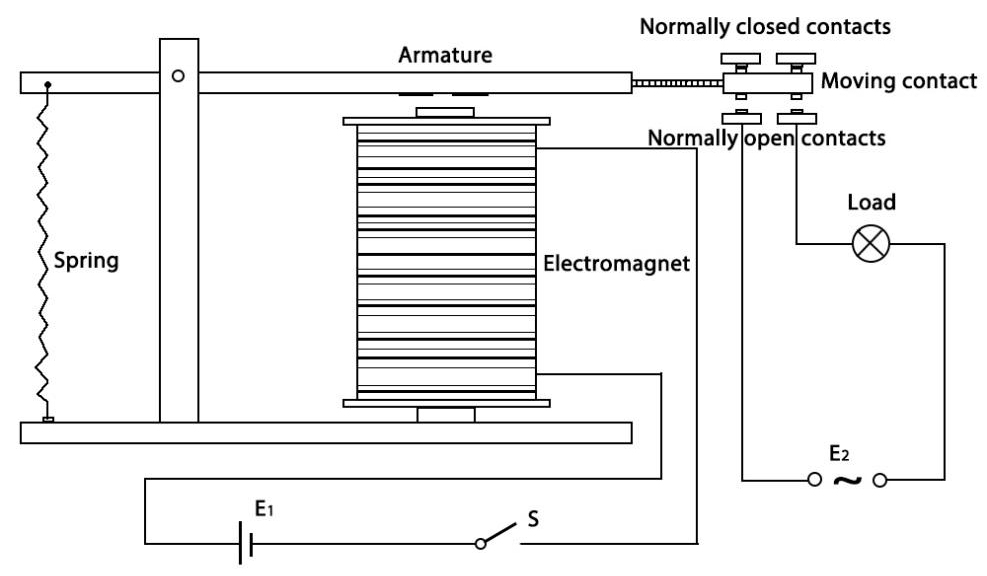

Nota
¡Hola! Bienvenido a la comunidad de entusiastas de SunFounder para Raspberry Pi, Arduino y ESP32 en Facebook. Únete para profundizar en Raspberry Pi, Arduino y ESP32 junto a otros apasionados.
¿Por qué unirse?
Soporte de expertos: Resuelve problemas postventa y desafíos técnicos con la ayuda de nuestra comunidad y equipo.
Aprender y compartir: Intercambia consejos y tutoriales para mejorar tus habilidades.
Acceso exclusivo: Obtén primicias sobre nuevos productos y adelantos.
Descuentos especiales: Disfruta de descuentos exclusivos en nuestros productos más recientes.
Promociones festivas y sorteos: Participa en sorteos y promociones de temporada.
üëâ ¬øListo para explorar y crear con nosotros? Haz clic en [Aqu√≠] y únete hoy mismo.
1.3.4 Relé
Introducción
En esta lección, aprenderemos a utilizar un relé. Es uno de los componentes comúnmente usados en sistemas de control automático. Cuando el voltaje, corriente, temperatura, presión, etc., alcanza, supera o se encuentra por debajo de un valor predeterminado, el relé conectará o interrumpirá el circuito para controlar y proteger el equipo.
Componentes
Principio
Diodo
Un diodo es un componente electrónico de dos terminales que permite el flujo de corriente en una sola dirección. Ofrece baja resistencia en la dirección de flujo de corriente y alta resistencia en la dirección opuesta. Los diodos se utilizan principalmente para prevenir daños a componentes, especialmente debido a fuerzas electromotrices en circuitos polarizados.

Los dos terminales de un diodo están polarizados, con el extremo positivo denominado ánodo y el extremo negativo denominado cátodo. El cátodo suele estar marcado con una banda de color o en plata. Controlar la dirección del flujo de corriente es una de las características clave de los diodos: la corriente en un diodo fluye del ánodo al cátodo. El comportamiento de un diodo es similar al de una válvula de retención. Una de las características más importantes de un diodo es su voltaje de corriente no lineal. Si se conecta un voltaje mayor al ánodo, entonces la corriente fluye del ánodo al cátodo; a este proceso se le conoce como polarización directa. Sin embargo, si el voltaje mayor se conecta al cátodo, el diodo no conduce electricidad, y el proceso se llama polarización inversa.
Relé
Como sabemos, el relé es un dispositivo utilizado para proporcionar conexión entre dos o más puntos o dispositivos en respuesta a la señal de entrada aplicada. En otras palabras, los relés proporcionan aislamiento entre el controlador y el dispositivo, ya que los dispositivos pueden funcionar tanto en CA como en CC. Sin embargo, reciben señales de un microcontrolador que funciona en CC, por lo que se requiere un relé para cerrar esa brecha. El relé es extremadamente útil cuando se necesita controlar una gran cantidad de corriente o voltaje con una señal eléctrica pequeña.
Un relé tiene 5 partes:
Electroimán - Consiste en un núcleo de hierro envuelto en una bobina de alambre. Cuando pasa electricidad, se vuelve magnético, por lo que se le llama electroimán.
Armadura - La tira magnética móvil se conoce como armadura. Cuando la corriente fluye a través de ella, la bobina se energiza, produciendo un campo magnético que se utiliza para abrir o cerrar los puntos normalmente abiertos (N/O) o normalmente cerrados (N/C). La armadura puede ser accionada tanto por corriente continua (CC) como por corriente alterna (CA).
Resorte - Cuando no hay corriente en la bobina del electroimán, el resorte aleja la armadura, evitando que el circuito se complete.
Conjunto de contactos eléctricos - Existen dos puntos de contacto:
Normalmente abierto: conectado cuando el relé está activado, y desconectado cuando está inactivo.
Normalmente cerrado: no conectado cuando el relé está activado, y conectado cuando está inactivo.
Marco moldeado - Los relés están cubiertos con plástico para protección.
Funcionamiento del Relé
El principio de funcionamiento del relé es sencillo. Cuando se alimenta el relé, la corriente comienza a fluir a través de la bobina de control; como resultado, el electroimán se energiza. Entonces, la armadura es atraída hacia la bobina, uniendo el contacto móvil con los contactos normalmente abiertos, energizando el circuito de carga. Para interrumpir el circuito, el contacto móvil se mueve hacia los contactos normalmente cerrados por la fuerza del resorte. De esta forma, el encendido y apagado del relé puede controlar el estado de un circuito de carga.
Diagrama Esquemático

Procedimientos Experimentales
Paso 1: Construye el circuito.

Para Usuarios de Lenguaje C
Paso 2: Abre el archivo de código.
cd ~/davinci-kit-for-raspberry-pi/c/1.3.4
Paso 3: Compila el código.
gcc 1.3.4_Relay.c -lwiringPi
Paso 4: Ejecuta el archivo compilado.
sudo ./a.out
Después de ejecutar el código, el LED se encenderá. Además, puedes escuchar un «tic-tac» causado por la apertura del contacto normalmente cerrado y el cierre del contacto normalmente abierto.
Nota
Si no funciona después de ejecutarlo, o aparece un mensaje de error: «wiringPi.h: No such file or directory», consulta c code is not working?.
Código
#include <wiringPi.h>
#include <stdio.h>
#define RelayPin 0
int main(void){
if(wiringPiSetup() == -1){ //si la inicialización de wiring falla, imprime mensaje en pantalla
printf("setup wiringPi failed !");
return 1;
}
pinMode(RelayPin, OUTPUT); //configura GPIO17 (GPIO0) como salida
while(1){
// Tick
printf("Relay Open......\n");
delay(100);
digitalWrite(RelayPin, LOW);
delay(1000);
// Tock
printf("......Relay Close\n");
delay(100);
digitalWrite(RelayPin, HIGH);
delay(1000);
}
return 0;
}
Explicación del Código
digitalWrite(RelayPin, LOW);
Configura el puerto I/O a nivel bajo (0V), por lo que el transistor no se energiza y la bobina no recibe energía. No hay fuerza electromagnética, por lo que el relé se abre y el LED no se enciende.
digitalWrite(RelayPin, HIGH);
Configura el puerto I/O a nivel alto (5V) para energizar el transistor. La bobina del relé recibe energía y genera fuerza electromagnética; el relé se cierra y el LED se enciende.
Para Usuarios de Lenguaje Python
Paso 2: Abre el archivo de código.
cd ~/davinci-kit-for-raspberry-pi/python
Paso 3: Ejecuta.
sudo python3 1.3.4_Relay.py
Mientras el código se ejecuta, el LED se enciende. Además, puedes escuchar un «tic-tac» causado por la apertura del contacto normalmente cerrado y el cierre del contacto normalmente abierto.
Código
Nota
Puedes Modificar/Restablecer/Copiar/Ejecutar/Detener el código a continuación. Antes de eso, necesitas dirigirte a la ruta del código fuente como davinci-kit-for-raspberry-pi/python.
import RPi.GPIO as GPIO
import time
# Configurar GPIO17 como pin de control
relayPin = 17
# Definir una función de configuración inicial
def setup():
# Configurar los modos de GPIO al sistema de numeración BCM
GPIO.setmode(GPIO.BCM)
# Configurar el modo de relayPin a salida,
# y el nivel inicial en alto (3.3V)
GPIO.setup(relayPin, GPIO.OUT, initial=GPIO.HIGH)
# Definir la función principal para el proceso principal
def main():
while True:
print ('Relay open...')
# Tick
GPIO.output(relayPin, GPIO.LOW)
time.sleep(1)
print ('...Relay close')
# Tock
GPIO.output(relayPin, GPIO.HIGH)
time.sleep(1)
# Definir una función destroy para limpiar todo al
# terminar el script
def destroy():
# Apagar el LED
GPIO.output(relayPin, GPIO.HIGH)
# Liberar recursos
GPIO.cleanup()
# Si ejecutas este script directamente, haz:
if __name__ == '__main__':
setup()
try:
main()
# Cuando se presiona 'Ctrl+C', el programa secundario
# destroy() se ejecutará.
except KeyboardInterrupt:
destroy()
Explicación del Código
GPIO.output(relayPin, GPIO.LOW)
Configura los pines del transistor a nivel bajo para abrir el relé, y el LED no se enciende.
time.sleep(1)
Espera durante 1 segundo.
GPIO.output(relayPin, GPIO.HIGH)
Configura los pines del transistor a nivel alto para activar el relé; el LED se enciende.
Imagen del Fenómeno